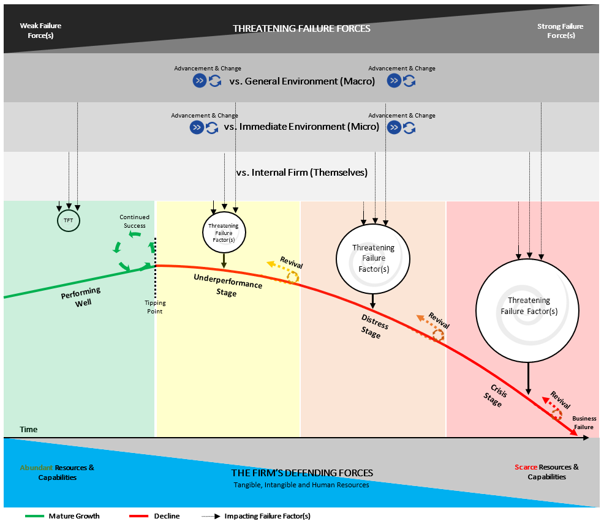

Our research on large and mature failed retailers emphasized that as organizations continue along the continuum of existence, they are in a constant battle against various failure factors associated with three environment domains. They battle; versus the internal firm environment (The Firm), versus the immediate environment (Micro) and versus the general environment (Macro).
As depicted in the framework, Business failure occurs when the strength of a single failure force, or clustering of failure forces, at various points in time, overpowers or no longer aligns with the resources and capabilities of the firm. As a result, negatively positioning the organization to a new point of failure. The new position of failure largely depends on the strength of the failure force or the degree of unalignment of the failure force in relation to the resource and capabilities or ‘defending mechanism’ available to the firm. If a firm has inadequate or poorly deployed resources and capabilities to combat the threatening failure forces, the existing and even potentially new failure forces (stemming from similar or new environment domains) will progressively push the organization into a new realm of failure, and ultimately, towards the point of absolute failure.
Firms with resources and capabilities that overpower the threatening failure factors experience continued superior success (The green block). In addition, firms with substantial resources and capabilities, or the ability to accumulated new resources and capabilities, can battle back (turnaround), outperform and preserve beyond the failure factors they encounter. This perseverance can occur at any stage of the failure process, emphasizing that firms can always avoid or prolong failure given they possess or can generate more significant internal resources and capabilities. This understanding of business failure broadly identifies that firms that operate in perpetuity equally face failure threats in perpetuity. In most cases, these failure threats probably go unnoticed because of their weak nature and dominant dynamics of the firm’s resources and capabilities. Albeit, the failure threat was present, nonetheless.
With this understanding of a constant threat of failure, it can be argued that firms need enhanced assessing tools that provide a comprehensive and holistic array of failure factor severity insights in relation to their present-day failure stage. The conceptualized tool aims to assess a retail firm against the dominant factors which have caused large and mature retail firms to fail in the past. To achieve this, two events-based tests are conducted to quantify and determine an organizations susceptibility to failure. One test explores dominant failure symptoms to identify the timeframe of failure an organization is in. The other test explores the degree of presence in the dominant failure factors to identify the threat. Collectively the insights derived from the assessment will enable you to optimally understand the firm’s failure positions in relation to the aspects that caused large and mature retails firms to fail in the past.